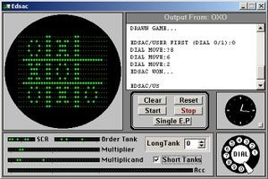
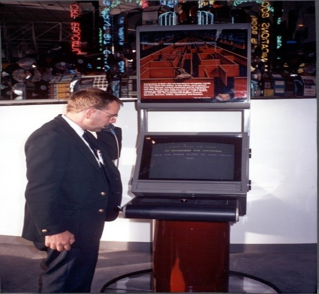
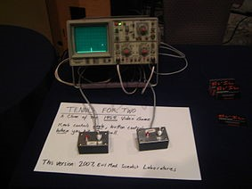
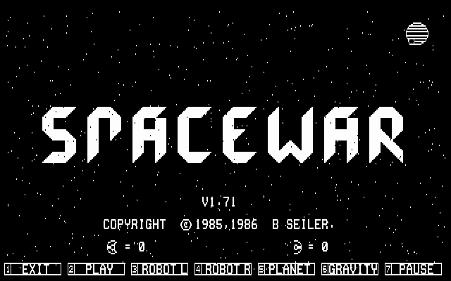
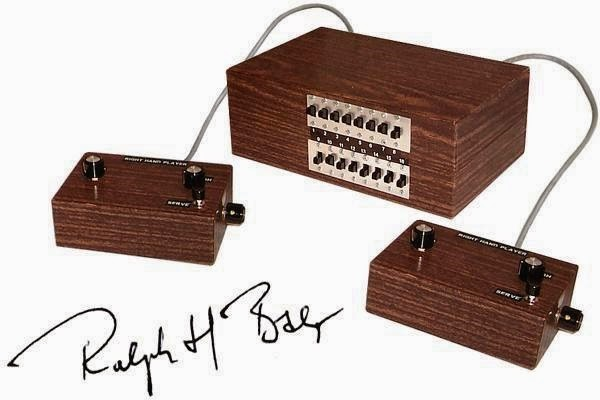
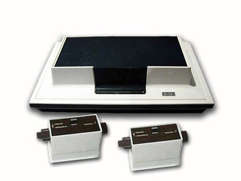
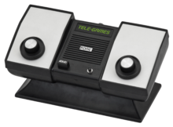
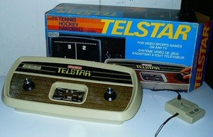
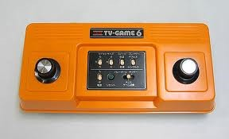
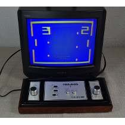

1ª Geração
Thomas Fabro
OXO: o início da revolução dos games
A primeira geração de consoles só viria duas décadas após a criação do primeiro jogo virtual ou eletrônico, mesmo entre várias contradições, já há o consenso que o primeiro game criado foi OXO ou “Noughts and Crosses” (Zero e Cruzes), literalmente o famoso “jogo da velha” feito para computador na plataforma EDSAC (Eletronic Delay StorageAutomatic Calculator, já este inspirado na máquina de Von Neumann), escrito por A. S. Douglas (ou Alexander Shafto Douglas), para demonstrar a interação entre o humano e a máquina em sua tese de doutorado pela Universidade de Cambridge, no ano de 1952. O jogo baseava-se nos números iguais de um telefone modelo 500 (popular nos lares americanos de 1950 até 1984, da Western Eletric), cada digito simbolizava uma posição dentro do diagrama do jogo, a cada escolha automaticamente a máquina escolhia a melhor possibilidade e marcava, assim voltava a seu turno, o que cabe dizer que não é de agora que existe a tão aclamada inteligência artificial que tantos imaginam.

Mouse in the Maze: a resposta soviética
Outro game antecessor a era dos consoles, foi o “Mouse in the Maze” (“rato no labirinto”, tradução literal), um jogo onde o player criava o labirinto onde o rato tinha que encontrar o queijo, ou seja, o jogador colocava as paredes dos labirintos, pedaços de queijo, assim interagindo por meio de uma caneta de luz com a tela do game. Surgiu na Rússia em 1955, depois de feito o labirinto o rato (que era a máquina, inteligência artificial) sempre procurava pelo menor caminho até o queijo, que em algumas versões era um cristal de Martini. Este jogo não trazia muito atrativo ao público, mas demonstrou um imenso avanço na linguagem para a inteligência artificial, ou seja, o público pode entender como a máquina realmente realizava seus feitos para alcançar um objetivo traçado por sua própria capacidade.

Tennis for Two: o divertimento para a bomba atômica
Um dos primeiros jogos criados e sem dúvida nenhuma o mais reconhecido, foi inventado pelo cientista e um dos criadores e responsáveis pelas pesquisas avançadas sobre fissura de átomos e megatons em plena guerra fria, Willy Higinbotham, pesquisas que levaram a criação da bomba atômica.
Na época era comum a visita a grandes laboratórios e centros de pesquisas e a forma encontrada por Wllly Higinbotham para que os visitantes de seu laboratório, Brookhaven National Laboratories, não ficassem aborrecidos ou chateados com o passeio, foi criar um aparelho que simulasse um jogo para duas pessoas se divertissem, utilizando um osciloscópio (é um instrumento de medida de sinais elétricos/eletrônicos apresentando gráficos bidimensionais de um ou mais sinais elétricos), assim nasceu o Tennis for Two (“tênis para dois”, em tradução literal), onde duas pessoas utilizavam um controle para acertar uma bola que necessariamente deveria passar pela rede, representada por um traço, de um lado para o outro, recomeçava o saque quando alguém errasse de alguma forma, porém, não possuía um contador de pontos ou troca de lado, comum no jogo real de tênis profissional.

SpaceWar: O espaço a fronteira final...
O primeiro jogo de naves e um dos primeiros games inventados, era em sua ideia inicial um projeto para um filme saindo da ficção científica dos livros para a tela. Porém, transformaram num jogo que acabou por ser uma das influências do famoso seriado, que também era para ser só um filme, Star Trek, Assim alguns colegas da Universidade Massachusetts Institute of Technology (MIT), Steve Russel, Dan Edwards, Alan Kotok, Peter Sampson, Wayne Wiitanen e Martin Graetz, desenvolveram num computador PDP-1.Steve imaginou então duas naves se digladiando no espaço com torpedos a laser, orbitando em volta de uma estrela que promovia um campo gravitacional que auxiliava ou prejudicava as naves, além da “saída de emergência”, que seria um botão para fuga em Hiperespaço, culminado no game Spacewar, finalizado em 1962.

The Brown Box: E a caixeta de mil fios
Então em 1966, um alemão tornou-se o PAI DOS VIDEOGAMES, nascido em 8 de março de 1922, Ralph Baer, vislumbrou que poderia criar algo divertido e de acesso a todos na própria tela de suas televisões, surgindo assim o primeiro console e os primeiros jogos eletrônicos domésticos, compatível com os televisores da época, algo inexplicavelmente novo.
Trabalhando para a empresa Sanders Association Inc, o engenheiro Baer, começou a ver que milhões de casas norte-americanas estavam investindo pesadamente em seus novos televisores, começando seus testes em 66, junto de seus colegas Bill Harrison e Bill Rusch, desenvolveram diversos protótipos, até em 1968, o sétimo protótipo ou conhecido originalmente como, TV Game Unit #7 ou “Pump Unity” (“Unidade Bomba”, tradução literal), se tornou o tão famoso e conhecido por seu apelido “The Brown Box”, pois era encaixotado dentro de uma caixa de madeira marrom.
O primeiro console do mundo compatível comum televisor possuía uma caixa central que continham a placa, diversas interligações eletrônicas e a placa que sustentava tudo, conectados a dois controles utilizados pelos jogadores para atuar durante os jogos e entradas/saídas para conexão com o televisor.
O Brown Box utilizava “cards” de papel que continham a programação dos jogos, assim era necessário colocar estes “cards” em dois “slots” e alterar os “switches” para mudar o jogo atual, assim era possível jogar Ping-Pong, Jogo de Damas, existia a troca dos controles por uma espingarrda (“Lightgun”) para jogo de tiro ao alvo e ainda colocar um controle que em sua ponta ficava uma bola de golf fixa para o jogo de golf, o console tinha 12 títulos diferentes e revolucionou o mercado de jogos que antes eram só realizados e fabricados em PC’s ou de formas mais simplórias, nuca antes eram videosgames (nome dado pois se utiliza uma tela ou monitor que não era embutido junto do console, como nos computadores, para transmissão de dados virtuais dos jogos).
O Brown Box não foi comercializado, mas foi licenciado pela Sanders Association Inc e se tornou o protótipo da primiera geração de consoles industrializados e comercializados no mundo.

A Primeira Geração de Consoles ou Geração de 1 bits
A primeira geração de consoles foi com o desenvolvimento do Magnavox Odyssey, que nada mais o Brown Box repaginado e melhorado, já que neste os cards de papéis foram substituídos por cards de plástico que era introduzido no corpo do videogame para alterar o jogo.
A primeira geração baseia-se em consoles de com processamento de 1 bit e jogos que alcançavam no máximo 100 Kilobuytes de armazenamento, algo já surpreendente para a época.
As características básicas que revelam os consoles de primeira geração são, que a lógica digital do jogo era realizado por transistor, o jogo é tido numa tela única e fixa, os objetos móveis (denominados de “sprites”, objetos gráfico bi ou tridimensional movendo-se numa tela sem deixar traços ou rastros de sua passagem, como um fantasma) se apresentam como linhas básicas, verticais ou horizontais, como também, pontos ou quadrados de pixel, os gráficos são monocromáticos (preto e branco sem tons de cinza e o som é gerado em forma de ondas quadradas, com ou sem nenhum canal independente.
Resumidamente temos:
• Processamento através de transistores;
• Gráficos em preto e branco, monocromáticos;
• Gráficos apresentavam apenas pontos e linhas;
• Os jogos estacionavam numa única tela ou monitor;
• Um canal de áudio ou sem som algum.
O primeiro de muitos: Magnavox Odyssey 100
O grande nome dessa geração, criado em 1972 foi o Magnavox Odyssey, o primeiro console industrializado e comercializado mundialmente, devido a um contrato milionário em a empresa Sanders Assocition Inc e a fabricante de televisores Magnavox Inc, com o investimento maciço, foi produzido a partir de seu protótipo o Brown Box.
Com o Brown Box era possível simular a tela, mas no produto final do Magnavox foi substituído por folhas de acetato que era necessário colocar na tela do televisor para simular as imagens de fundo dos jogos para baratear o custeio de produção do console.
O Magnavox contou com diversas atualizações ou novos consoles para seu melhoramento gráfico, de jogos e acessórios.
Sendo em sequência de criação o Magnavox Odyssey 100, a Série Flesters (contam com vários modelos com pouco tempo de vida no mercado, buscando melhorias para competir com o Pong da Atari) são, Odyssey 200, implementação de dois chipsets (da Texas Instruments, empresa norte-americana que desenvolve e fabrica semicondutores para fabricantes eletrônicos)adicionando o jogo smash, mais marcações na tela e a possibilidade de 2 até 4 jogadores, o Odyssey 300, a diferença ficava no design, o Odyssey 400, com a implementação de mais um chipset conseguiu adicionar ao jogo ping-pong o placar, o Odyssey 500, apenas muda a imagem dos players durante o game e dá espaço para mais quatro jogos, o Odyssey 2000, apresentou quatro jogos coloridos (tênis, Smash, Hockey e Practice), Odyssey 2001, é o modelo Odyssey 2000 mas Europeu, porém, adicionava o recurso de som e controle de placar pela TV, o Odyssey 3000, continha com controles destacáveis (atualmente conhecidos como pads), Odyssey 4000, foi o último da série lançado nos Estados Unidos em 1977, possuía controles destacáveis e vários jogos novos e inovadores, Odyssey 2100, seria o Odyssey 5000 norte-americano que não foi lançado, assim só teve seu lançamento em terras europeias, nele cinco jogos eram coloridos e possuía mais de 23 jogos em sua memória.
O Magnavox contava com uma lista de bons jogos e outros que não deram muito certo, além é claro do famoso Ping-Pong, sendo em ordem alfabética: Analogic, Baseball, Basketball, Brain Wave, Cat & Mouse, Dogfight, Football, Fun Zoo, Handall, Haunted House, Hockey, Inavasion, Interplanetary Voyage, Percepts, Prehistoric Safari, Roulette, Shooting Gallery, Shootout, Simon Says, Ski, Soccer, States, Submarine, Tabble Tennis, Tennis, Voleyball, Win e Wipeout.

Pong: O sucesso da Atari e do mundo dos games
Pong foi o primeiro videogame da história dos consoles que gerou um lucro irreal, acima do esperado para uma época em que o entretenimento eletrônico ainda engatinhava, mas com muita ferocidade.
Pong foi idealizado por Nolan Bushnell e Ted Dabney, fundadores da Atari, depois que Nolan jogou o Ping-Pong de Ralph Baer, numa visita de Nolan a Magnavox Provit Caravan, no ano de 1972, em Burlingame, Califórnia, onde jogou a demonstração de Magnavox Odyssey, mais tarde seria processado pela Magnavox e Ralph Baer e teria dito em sua defesa “O fato que vi o jogo Odyssey e eu não o achei muito inteligente. ”, mas isto é história para outro dia.
Assim, criaram um arcade game chamado Pong e primeiramente instalaram num bar de São Francisco, Califórnia, após o grande sucesso e na quantia arrecadada pela máquina por dia, descobriram sua grande galinha dos ovos dourados, ainda assim era apenas tido como um fliperama, até que um dos engenheiros da Atari Harold Lee propôs um modelo em versão doméstica, com a ajuda de Alcorn, surgiu o primeiro videogame de maior vendagem até então conhecido.
Home Pong, o primeiro console da Atari, contava com o sucesso Pong, e mais quatro jogos, de arcade e até de tiro com uma pistola. O console não foi um sucesso logo de cara, pois a Atari encontrou dificuldades em achar um parceiro comercial para investir no projeto, mas conseguiu o investimento da empresa Sears (uma rede de loja de varejos, atualmente espalhada pelo mundo), com uma vendagem rápida de mais de 150.000 mil unidades.
O legado deixado por Pong foi importantíssimo para os videosgames, pois dele saiu inúmeros clones de outras empresas que começaram a se aventurar pelo ramo de entretenimento de jogos eletrônicos, as mais famosas cópias do Pong da Atari foram o Color TV Game da Nintendo e o Maze da Konami (duas novatas no ramos naquela época).

Telstar Coleco: um grande golpe de sorte
Uma empresa que uniu força de vontade, uma grande estratégia na compra de seus produtos para fabricação, uma imensa linha de produção e o clone perfeito do console que todos queriam a um preço muito mais baixo.
Essas são as principais características do console mais vendido da primeira geração, um pouco mais de 1.000.000 um milhão de unidades. Um dos principais motivos de seu sucesso, foi a distribuição do chip fabricado pela General Instruments, uma das únicas empresas que produzia e fornecia para as empresas de jogos eletrônicos, sobrecarregada, entregou apenas 20% dos pedidos da maioria das empresas concorrentes da Coleco que recebeu todo seu pedido adiantado.
O videogame Telstar recebeu diversas atualizações e repaginadas, foram no total mais ou menos 14 versões do seu lançamento até seu descontinuo de 1976 até 1978.
Suas variações aumentavam o número de jogos, a propriedade gráfica de monocrómica para colorida, chips mais velozes, melhores efeitos sonoros e função multiplayer.
Seus jogos não passavam daqueles já existentes na época; Hockey, Handball, Tennis, Jai Alai, Target, Skeet, Jogos de tiro: Combat, Night Battle, Robot Battle, Camouflage Battle, os jogos Multiplayers: Four Pinball Games, Two lightguns games e Road Racing.

Color TV Game: a estreante que reluzia (atualmente já virou passado)
Assim como a Telstar da Coleco, a Color TV Game 6, era mais um clone bem sucedido do Pong da Atari, a nova aposta da Nintendo, com a ajuda da Mitsubishi, depois de vários ramos em que a Nintendo se meteu, seu presidente Hiroshi Yamauchi, em 1977 reconheceu o grande empreendimento que se tornaria os jogos de entretenimento eletrônico. Sua grande aposta foi de vender seu aparelho apenas no Japão, já que quase não existia concorrência.
O console em si não possuía controles destacáveis como os outros consoles e foi apelidado de CTG 6 (o número é derivado de que o console possuía apenas 6 variações de Pong), como também não possuía cartuchos para introdução de diferentes jogos, contava com 6 jogos na memória todos eram diferentes formas do jogo Pong da Atari, em seu corpo apresentava-se suas manivelas, que eram os joysticks de controle dos jogadores e seis botões que manipulavam os jogos, mudando velocidade, tamanho, cor e forma de tudo dentro dos jogos.
O Color TV Game, assim como os outros consoles que alcançaram sucesso, teve alguns upgrades, ou seja, melhorias de gráfico, som, jogos e joysticks. Seus modelos eram, o Color TV GAME 6, o Color TV Game 15, com não só apenas seis, mas agora com 15 versões diferentes do Pong, Color TV-Racing 112, dessa vez um jogo de corrida, o Color TV Game Block Kuzushi, baseado no jogo Breakout. Devido ao grande sucesso no Japão, a Nintendo conseguiu angariar fundos para criar seus famosos fliperamas e os consoles portáteis como o Game & Watch.

Telejogo: O primeiro console a bater um Ping e um Pong em Terras Tupiniquins
O console com menos destaque na primeira geração e mais um clone do Home Pong ou Tele Game da Atari, foi o primeiro fabricado e vendido no Brasil com o nome de TeleJogo.
Fabricado pela Ford-Philco, trazia embutido em sua memória três jogos, Tênis, Futebol e Paredão, seus controles eram embutidos e a CPU era um National Semiconductor MM57100M. Seu grande mercado no Brasil foi devido a proibição de produtos importados considerados supérfluos durante a ditadura.

Lista de consoles da Primeira Geração
| Console | Fabricante | Lançamento |
| Magnavox Odyssey | Magnavox | 1972 |
| Pong | Atari | 1975 |
| Coleco Telstar | Coleco | 1976 |
| Color TV Game | Nintendo | 1977 |
| Telejogo | Ford-Philco | 1977 |